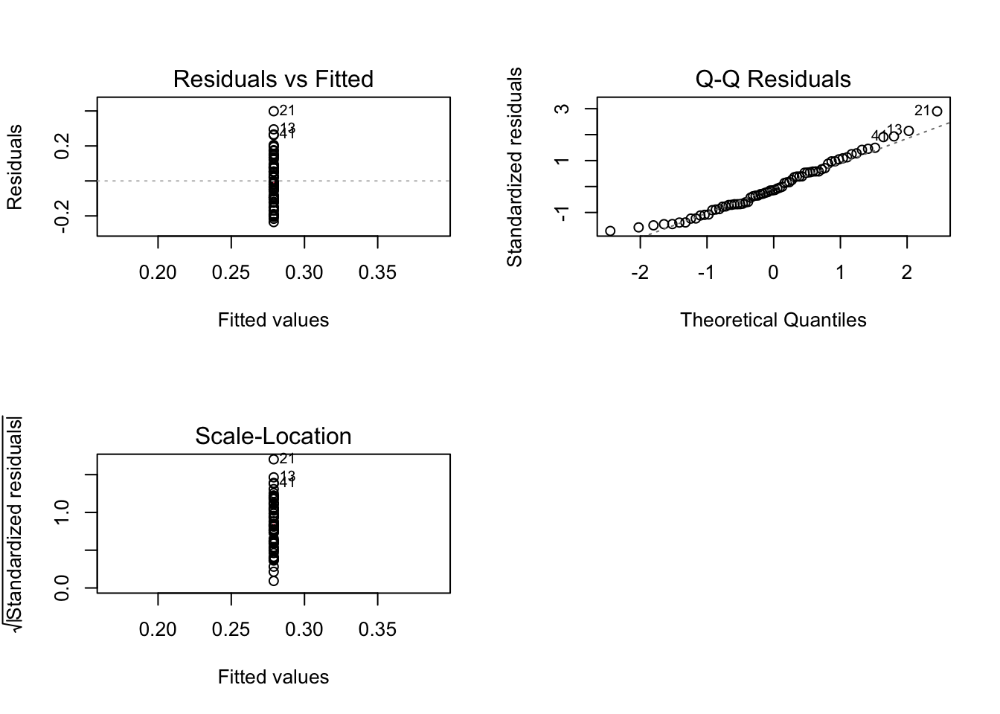

# general use
library(tidyverse)
library(readxl)
library(here)
library(janitor)
# visualizing pairs
library(GGally)
# model selection
library(MuMIn)
# model predictions
library(ggeffects)
# model tables
library(gtsummary)
library(flextable)
library(modelsummary)
drought_exp <- read_xlsx("/Users/owenchoy/Downloads/ENVS 193DS Statistics for Environmental Science/ENVS-193DS/git/choy-owen_homework-03/code/data/Valliere_etal_EcoApps_Data.xlsx",
sheet = "First Harvest")homework-03
Link to forked repository: https://github.com/owenchoy/choy_owen-homework-03
setup
# cleaning
drought_exp_clean <- drought_exp %>%
clean_names() %>% # nicer column names
mutate(species_name = case_when( # adding column with species scientific names
species == "ENCCAL" ~ "Encelia californica", # bush sunflower
species == "ESCCAL" ~ "Eschscholzia californica", # California poppy
species == "PENCEN" ~ "Penstemon centranthifolius", # Scarlet bugler
species == "GRICAM" ~ "Grindelia camporum", # great valley gumweed
species == "SALLEU" ~ "Salvia leucophylla", # Purple sage
species == "STIPUL" ~ "Nasella pulchra", # Purple needlegrass
species == "LOTSCO" ~ "Acmispon glaber" # deerweed
)) %>%
relocate(species_name, .after = species) %>% # moving species_name column after species
mutate(water_treatment = case_when( # adding column with full treatment names
water == "WW" ~ "Well watered",
water == "DS" ~ "Drought stressed"
)) %>%
relocate(water_treatment, .after = water) # moving water_treatment column after water# Null model
model0 <- lm(total_g ~ 1,
data = drought_exp_clean)
# total biomass as a function of SLA, water treatment, and species
model1 <- lm(total_g ~ sla + water_treatment + species_name,
data = drought_exp_clean)
# total biomass as a function of SLA and water treatment
model2 <- lm(total_g ~ sla + water_treatment,
data = drought_exp_clean)
# total biomass as a function of SLA and species
model3 <- lm(total_g ~ sla + species_name,
data = drought_exp_clean)
# total biomass as a function of water treatment and species
model4 <- lm(total_g ~ water_treatment + species_name,
data = drought_exp_clean)
par(mfrow = c(2, 2))
plot(model0)
plot(model1)
plot(model2)
plot(model3)
plot(model4)
# diagnostics test for all models look good: homoscedastic, normal, and no outliers
# comparing all 5 models
model.sel(model0,
model1,
model2,
model3,
model4)Model selection table
(Int) sla spc_nam wtr_trt df logLik AICc delta weight
model4 0.05455 + + 9 88.598 -156.2 0.00 0.772
model1 0.07994 -0.0002475 + + 10 88.741 -153.8 2.44 0.228
model3 -0.03315 0.0012900 + 9 72.538 -124.1 32.12 0.000
model2 0.04670 0.0012810 + 4 52.220 -95.8 60.37 0.000
model0 0.27900 2 39.580 -75.0 81.22 0.000
Models ranked by AICc(x) # conclusion: model4 is bestProblem 1 Multiple linear regression: model selection and construction
- Make a table or list of all the models from class and the last one you constructed on your own. Write a caption for your table.
Table 1 Model predictions.
model_comparison <- data.frame(
model = c("0",
"1",
"2",
"3",
"4"),
predictors = c("none",
"SLA, water treatment, species",
"SLA, water treatment",
"SLA, species",
"water treatment, species")
)
flextable(model_comparison) %>%
set_table_properties(layout = "autofit")model | predictors |
|---|---|
0 | none |
1 | SLA, water treatment, species |
2 | SLA, water treatment |
3 | SLA, species |
4 | water treatment, species |
- Write a 5-6 sentence “statistical methods” section
Your answer should be in paragraph form and include: - how you addressed the central question(s) (i.e. to examine the influence of ____, ____, and ____ on _____, I…) - how you chose the final model (i.e. to determine the model that best described ____, I…) - how you visually determined that your final model conformed to the assumptions of a linear model (i.e. to evaluate linear model assumptions, I…)
- Make a visualization of the model predictions with underlying data for your “best” model. Show and annotate all your code. For full credit:
- make the underlying data more transparent than the model predictions
- display species names in full (not as species codes like ENCCAL or ESCCAL)
- display water treatment types in full (not as WW or DS)
- represent well-watered and drought stressed treatments with different colors
- use colors that are not the default ggplot() colors
- facet your plot by species
- remove the legend
- finalize the plot
- Write a caption for your visualization
include a data citation
- Write a 3-4 sentence results section.
Your answer should be in paragraph form and address the following points: - what predictors “best” described total mass (include model statistics here)? - on average, what differences did you find between water treatments? - on average, what differences did you find between species?
Problem 2 Affective visualization
Describe in words what an affective visualization could look like for your personal data (3-5 sentences).
Create a sketch (on paper) of your idea.
Make a draft of your visualization.
Write an artist statement.
An artist statement gives the audience context to understand your work. Write 4-5 sentences to address: - the content of your piece (what are you showing?) - the influences (what did techniques/artists/etc. did you find influential in creating your work?) - the form of your work (written code, watercolor, oil painting, etc.) - your process (how did you create your work?)
Problem 3 Statistical Critique
- Revisit and summarize What are the statistical tests the authors are using to address their main research question?
Insert the figure or table you described in Homework 2 here.
Visual clarity How clearly did the authors visually represent their statistics in figures? For example, are the x- and y-axes in a logical position? Do they show summary statistics (means and SE, for example) and/or model predictions, and if so, do they show the underlying data?
Aesthetic clarity How well did the authors handle “visual clutter”? How would you describe the the data:ink ratio?
Recommendations (can be longer than 4 sentences) What recommendations would you make to make the figure better? What would you take out, add, or change? Provide explanations/justifications for each of your recommendations.
Alternatively, if they did not represent their statistics in a figure, what kind of figure would you recommend to them? Describe the x- and y-axes, with any geometries and aesthetics (colors, etc.). Provide enough explanation such that someone would be able to create the figure you describe in code. Provide explanations/justifications for the figure you would recommend.